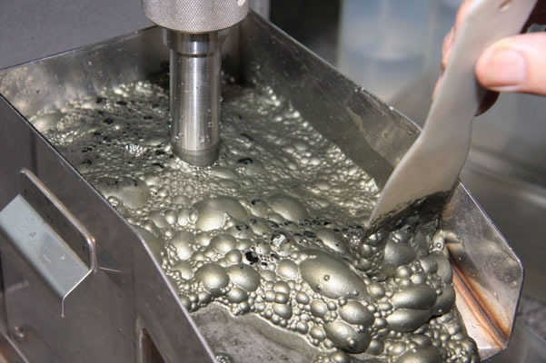

This project made it possible to validate and quantify the effect of certain optimizing actions aimed at increasing the treatment capacity of the process. The foregoing through a statistical analysis of operational data from the SAG mill.

The present work consisted in carrying out an exploratory data analysis, from data generated in different laboratory test campaigns, to find the main trends, relationships, and/or correlations between the key variables of the process, which allows identifying the geo metallurgical units that will have the greatest impact on the long-term planning process of the concentrator plant.
The objective of this study was to map the levels of copper grades associated with different geometallurgical units and deposit zones, as a support to the deposit production planning process.
The work consisted mainly in modeling the slope of the kinetic model of acid consumption with different measurable properties of the mineral, based on the data generated in the laboratory tests carried out in mini-columns.